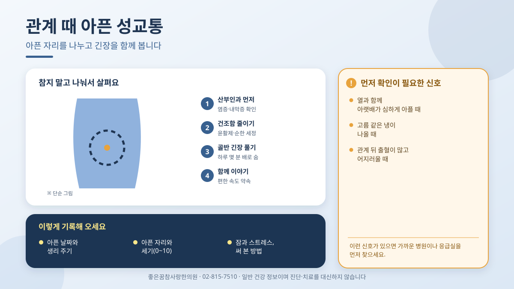

이종호 한의사 감수좋은꿈참사랑한의원 대표원장 (한의사 면허번호 19769)발행 2026-11-26 · 수정 2026-11-26
이 글의 차례
진료가 거의 끝나 갈 무렵, 가방을 챙기던 분이 잠시 머뭇거리다 다시 의자에 앉습니다. "원장님, 이런 것도 여쭤봐도 되나요." 그리고 아주 작은 목소리로 부부 관계 때 아프다는 이야기를 꺼내십니다. 성교통은 이렇게 진료실 문을 나서기 직전에야 겨우 나오는 이야기인 경우가 많습니다.
말하기 어려운 만큼 혼자 참아 온 시간도 깁니다. 처음에는 피곤해서 그런가 싶었다가, 몇 번 반복되면 관계 자체가 두려워지고, 두려움이 다시 몸을 굳게 만듭니다. 배우자에게 미안한 마음, 내 몸이 이상한 건 아닐까 하는 걱정이 함께 쌓이기도 합니다.
저는 먼저 이 말씀부터 드립니다. 관계 때 아픈 것은 참고 넘길 일도, 부끄러워할 일도 아니라고요. 성교통은 꽤 많은 분이 겪는 흔한 불편이고, 이유를 하나씩 나눠 보면 살펴볼 길이 생깁니다.
이 글에서는 성교통이 어떤 모양으로 나타나는지, 왜 생기는지, 산부인과와 한의원에서 각각 무엇을 살피는지, 그리고 생활에서 먼저 해 볼 수 있는 것을 차근차근 정리해 보겠습니다.
성교통은 어떤 불편을 말하나요?
성교통은 관계를 하는 동안이나 관계 뒤에 생기는 통증을 함께 부르는 말입니다. 한 번 아팠다고 모두 성교통이라고 하지는 않고, 비슷한 통증이 여러 번 반복되어 생활과 마음에 부담이 될 때 살펴볼 대상이 됩니다.
통증의 모양은 크게 두 가지로 나눠 봅니다. 하나는 입구 쪽 통증입니다. 처음 닿을 때 따갑거나 쓰리고, 찢어지는 느낌이 들며, 관계 뒤에도 화끈거림이 남습니다. 다른 하나는 깊은 곳의 통증으로, 깊이 들어갈 때 아랫배 안쪽이나 골반 깊숙이 묵직하게 울리는 느낌입니다.
두 가지가 함께 있는 분도 계십니다. 처음에는 입구가 아팠는데 그 경험이 반복되면서 골반 근육이 미리 굳어지고, 나중에는 깊은 곳까지 불편해지는 식입니다. 그래서 언제부터, 어디가, 어떻게 아팠는지 순서를 되짚어 보는 것이 출발점이 됩니다.
왜 관계 때 통증이 생길까요
입구 쪽 통증에서 가장 흔한 이유는 건조함입니다. 출산 뒤 수유 기간, 갱년기 무렵, 일부 피임약이나 호르몬 치료 중에는 질 점막이 얇아지고 촉촉함이 줄어 마찰에 약해집니다. 피곤하거나 긴장한 상태에서 충분히 준비되지 않은 채 관계를 하는 것도 건조함을 키웁니다.
질염이나 외음부 피부염처럼 염증이 있을 때도 따갑고 쓰립니다. 반복되는 질염, 세정제나 패드에 대한 피부 자극, 꽉 끼는 옷이 계기가 되기도 합니다. 출산 때 생긴 회음부 상처가 아문 자리가 당기는 경우도 있습니다.
깊은 곳의 통증은 자궁내막증, 자궁근종, 골반 안의 염증이나 유착, 난소의 혹처럼 골반 속 상태와 이어져 있을 수 있습니다. 이런 원인은 산부인과 진찰과 초음파로 먼저 확인해야 하는 부분이라, 깊은 통증이 반복된다면 산부인과 진료를 먼저 권합니다.
여기에 골반바닥 근육의 긴장이 더해집니다. 아플까 봐 걱정하는 마음은 저도 모르게 골반 근육을 조이게 만들고, 조인 근육은 다시 통증을 키웁니다. 잠이 부족하고 스트레스가 많은 시기에 통증이 더 심해진다는 분이 많은 것도 이 고리 때문입니다.
한의학에서는 아랫배가 차고 손발이 시리며 생리통이 함께 있는 분, 몸에 열이 오르고 입이 마르며 잠이 얕은 분을 서로 다르게 봅니다. 같은 성교통이라도 몸의 바탕이 어느 쪽에 가까운지에 따라 생활에서 신경 쓸 부분과 진료의 방향이 달라집니다.
비슷한 불편과 이렇게 나눠 봅니다
관계 뒤 아랫배가 묵직하고 소변이 자주 마렵고 따갑다면 방광염을 함께 생각해 봅니다. 관계 뒤에 방광염이 반복되는 분이 꽤 많아서, 통증이 관계 중인지 관계 뒤 소변을 볼 때인지를 나눠 여쭙습니다.
생리 때마다 아랫배와 허리가 심하게 아프고, 그 통증이 해마다 조금씩 심해지면서 관계 때 깊은 곳까지 아프다면 자궁내막증 가능성을 산부인과에서 확인해 보시길 권합니다. 배란기 무렵에만 한쪽 아랫배가 콕콕 아프다면 배란통과 겹쳐 있을 수도 있습니다.
입구 쪽만 따갑고 가렵고 냉의 색이나 냄새가 달라졌다면 질염을, 피부가 하얗게 얇아지고 갈라진다면 외음부 피부 질환을 먼저 확인합니다. 어느 쪽이든 원인 확인은 산부인과에서 하고, 한의원에서는 그와 나란히 몸 전체의 흐름을 살핍니다.
스스로 점검해 보세요
아래 항목을 떠올려 보시면 진료실에서 이야기를 나누기가 한결 쉬워집니다.
- 아픈 자리가 입구 쪽인가요, 깊은 곳인가요?
- 처음부터 아팠나요, 어느 시기부터 생겼나요?
- 출산, 수유, 피임약 시작, 갱년기처럼 몸이 달라진 시기와 겹치나요?
- 생리 주기 가운데 특히 아픈 때가 있나요?
- 냉의 양이나 색, 냄새가 달라졌나요?
- 관계 뒤 소변이 따갑거나 자주 마렵나요?
- 관계를 떠올리기만 해도 몸이 굳는 느낌이 드나요?
진료실에서 자주 듣는 걱정
"나이 들면 원래 그런 거 아닌가요"라는 말씀을 자주 듣습니다. 갱년기 무렵 건조함이 늘어나는 것은 흔한 변화지만, 그렇다고 통증을 참고 지내야 한다는 뜻은 아닙니다. 산부인과에서 보습제나 국소 치료를 상의해 볼 수 있고, 생활에서 바꿔 볼 것도 있습니다.
"배우자에게 말하기가 어렵다"는 걱정도 많습니다. 통증이 있다는 사실을 숨긴 채 관계를 이어 가면 몸은 점점 더 긴장합니다. 아프다는 것, 무엇이 조금 편했는지를 짧게라도 나누는 것만으로 몸의 긴장이 한결 줄어드는 경우가 많습니다.
출산 뒤와 갱년기 무렵에 달라지는 것
출산 뒤 수유를 하는 동안에는 여성 호르몬이 낮게 유지되어 질 점막이 얇고 건조해지기 쉽습니다. 여기에 밤중 수유로 잠이 조각나고, 아이를 안느라 허리와 골반이 늘 긴장해 있으니 몸이 관계를 받아들일 여유가 줄어듭니다. 이 시기의 통증은 몸이 아직 회복 중이라는 신호로 받아들이셔도 됩니다.
회음부를 꿰맨 자리가 아물면서 단단하게 당기는 분도 계십니다. 앉을 때나 관계 때 같은 자리가 찌릿하다면 산후 검진 때 그 자리를 보여 드리고 상의해 보세요.
갱년기 무렵에는 점막이 얇아지는 변화가 서서히 진행됩니다. 소변이 자주 마렵고 따가운 느낌, 외음부 가려움이 함께 오기도 합니다. 산부인과에서 국소 보습제나 치료를 상의할 수 있고, 한의원에서는 열감, 잠, 건조함 같은 갱년기의 다른 변화를 함께 살핍니다.
마음과 몸의 긴장은 이렇게 이어집니다
통증을 한두 번 겪고 나면 몸은 그 기억을 오래 간직합니다. 관계가 시작되기도 전에 어깨가 올라가고, 숨이 얕아지고, 허벅지 안쪽과 골반 아래 근육이 단단해집니다. 이렇게 굳은 상태에서는 작은 마찰도 더 아프게 느껴집니다.
그래서 성교통을 살필 때는 아픈 자리만큼 긴장의 고리를 함께 봅니다. 잠이 부족한지, 일이나 육아로 마음이 쫓기는지, 관계를 떠올릴 때 어떤 생각이 먼저 드는지를 여쭙는 이유입니다. 몸을 이완하는 연습과 마음의 부담을 덜어 내는 일이 통증을 줄이는 데 함께 쓰입니다.
먼저 이렇게 여쭙니다
처음 오시면 저는 대략 이런 순서로 여쭙니다. 대답하기 불편한 질문은 건너뛰셔도 괜찮습니다.
- 통증이 언제부터, 얼마나 자주 있었나요?
- 아픈 자리와 느낌은 어떤가요?
- 산부인과 진찰을 받으셨나요? 들으신 설명은 무엇인가요?
- 생리 주기와 생리통, 생리 양은 어떠신가요?
- 출산이나 수유, 피임약, 호르몬 치료를 하고 계신가요?
- 잠과 소화, 손발과 아랫배의 온도는 어떠신가요?
- 요즘 마음을 무겁게 하는 일이 있나요?
임신을 준비 중이시거나 임신 가능성이 있다면 가장 먼저 알려 주세요. 침과 한약을 정할 때 고려할 것이 달라지고, 필요하면 산부인과와 먼저 상의하시도록 안내합니다.
일상에서 먼저 해 볼 수 있는 것
건조함이 느껴진다면 관계 전 충분한 시간을 두고, 수용성 윤활제를 써 보시는 것이 가장 쉬운 시작입니다. 향이나 성분이 많은 제품은 자극이 될 수 있어 단순한 제품을 고르시길 권합니다.
외음부는 미지근한 물로만 씻어도 충분합니다. 세정제를 자주 쓰거나 안쪽까지 씻어 내면 오히려 점막이 마르고 자극받기 쉽습니다. 통풍이 되는 면 속옷, 너무 꽉 끼지 않는 하의도 도움이 됩니다.
관계 뒤에는 소변을 보고 물을 한 잔 드세요. 방광염이 반복되는 분께 특히 권하는 습관입니다.
골반 근육의 긴장을 풀기 위해 하루 몇 분씩 배로 숨 쉬는 연습을 해 보세요. 누워서 무릎을 세우고, 숨을 들이쉴 때 아랫배와 골반 아래가 부드럽게 내려가는 느낌, 내쉴 때 저절로 돌아오는 느낌만 따라가면 됩니다.
아픈 날은 무리하지 않는 것도 중요합니다. 통증을 참고 이어 가면 몸은 그 기억을 남겨 다음에 더 긴장합니다. 서로 편한 자세와 속도를 찾고, 아프면 멈출 수 있다는 약속을 미리 해 두는 것만으로도 마음이 놓입니다.
배우자와 함께 이야기 나누는 법
통증 이야기를 꺼내기 어려운 이유는 상대가 서운해하거나 거절로 받아들일까 걱정되기 때문인 경우가 많습니다. 그럴 때는 "당신이 싫어서가 아니라 몸이 아파서"라는 말부터 시작해 보세요. 문제를 둘 사이의 일이 아니라 함께 풀어 갈 몸의 일로 놓으면 대화가 한결 부드러워집니다.
관계가 아닌 시간에 이야기하는 것도 방법입니다. 산책을 하거나 차를 마시며, 어떤 때가 덜 아팠는지, 무엇이 마음을 편하게 했는지를 나눠 보세요. 통증이 줄어들 때까지는 관계 말고도 가까움을 느낄 수 있는 방법을 함께 찾아보는 것도 좋습니다.
한의원에서 함께 살필 수 있는 경우
- 산부인과에서 큰 이상은 없다고 들었는데 통증이 이어지는 경우
- 아랫배와 손발이 차고 생리통이 함께 있는 경우
- 잠이 얕고 긴장이 많은 시기에 통증이 더 심해지는 경우
- 출산이나 갱년기 뒤 몸의 회복이 더딘 느낌이 함께 있는 경우
- 허리와 골반, 고관절 주변이 늘 뻐근한 경우
좋은꿈참사랑한의원에 오시면 먼저 아래 '먼저 확인이 필요한' 신호가 없는지부터 봅니다. 그다음 맥을 짚고, 아랫배와 허리, 골반 주변의 긴장을 살피며 잠과 소화, 생리, 마음의 상태를 함께 여쭙습니다.
진찰한 내용을 바탕으로 생활에서 바꿔 볼 것 하나와 함께 침, 온열 관리, 한약 상담 가운데 지금 상태에 맞는 것을 정합니다. 한약을 상의할 때는 드시는 약을 모두 확인하고 신중하게 정합니다. 산부인과에서 처방받은 약은 처방한 선생님과 상의 없이 멈추지 않습니다.
염증이나 자궁내막증처럼 원인 확인과 치료가 필요한 부분은 산부인과와 나란히 가는 것이 기본입니다. 한의원에서는 그 진료와 함께, 몸이 덜 긴장하고 회복할 수 있는 바탕을 살핀다고 생각해 주시면 됩니다.
이렇게 기록해 오시면 상담이 쉬워집니다
통증은 말로 설명하기 어려운 만큼 짧은 기록이 큰 도움이 됩니다. 두세 달 정도 적어 보세요.
- 아팠던 날짜와 생리 주기 가운데 어느 때였는지
- 아픈 자리(입구 쪽, 깊은 곳)와 세기(0~10)
- 관계 뒤 화끈거림이나 소변 불편이 있었는지
- 냉의 변화, 가려움
- 그 주의 잠과 피로, 스트레스 정도
- 써 본 방법과 그때의 느낌
자세한 내용을 적기 부담스러우시면 날짜와 세기 숫자만 적어 오셔도 충분합니다.
혼자 참지 않아도 됩니다
성교통은 몸의 문제이면서 두 사람의 관계, 그리고 마음과도 이어진 불편입니다. 그래서 한 가지 방법으로 단번에 정리되기보다, 원인을 확인하고 몸의 긴장을 풀고 서로의 이야기를 나누는 일이 함께 갈 때 조금씩 편해지는 경우가 많습니다.
이번 주에는 기록 하나, 배로 숨 쉬기 몇 분, 그리고 배우자에게 짧게 마음을 전하기 가운데 하나만 골라 보세요. 다음에 오시면 그 기록부터 함께 펼쳐 보겠습니다.
이런 증상은 먼저 확인이 필요합니다
- 열이 나면서 아랫배가 심하게 아프고 고름 같은 냉이 나오는 경우
- 관계 뒤 출혈이 많거나 멈추지 않고, 어지럽거나 쓰러질 것 같은 경우
이런 신호가 있으면 한의원보다 가까운 병원이나 응급실을 먼저 찾으세요.
함께 읽으면 좋은 글
- 질염이 자꾸 반복되고 냉·대하가 신경 쓰일 때는 무엇을 살피나요?
- 자궁내막증이 있다고 들었을 때, 생리통과 골반 통증은 어떻게 함께 살피나요?
- 방광염이 자꾸 재발할 때는 무엇을 확인하고, 재발 사이의 몸은 어떻게 살피나요?
- 갱년기 무렵 눈·입·피부가 부쩍 건조해졌을 때는 무엇을 살피나요?
- 생리 때마다 아랫배가 차고 묵직할 때는 무엇을 먼저 살피나요?

여쭙는 것
- 통증이 언제부터, 얼마나 자주 있었나요?
- 아픈 자리와 느낌은 어떤가요?
- 산부인과 진찰을 받으셨나요? 들으신 설명은 무엇인가요?
생활에서 해 볼 것
- 건조함이 느껴진다면 관계 전 충분한 시간을 두고, 수용성 윤활제를 써 보시는 것이…
- 향이나 성분이 많은 제품은 자극이 될 수 있어 단순한 제품을 고르시길 권합니다.
- 외음부는 미지근한 물로만 씻어도 충분합니다.
한의원에서 함께 살필 것
- 산부인과에서 큰 이상은 없다고 들었는데 통증이 이어지는 경우
- 아랫배와 손발이 차고 생리통이 함께 있는 경우
- 잠이 얕고 긴장이 많은 시기에 통증이 더 심해지는 경우
먼저 확인이 필요한 신호
- 열이 나면서 아랫배가 심하게 아프고 고름 같은 냉이 나오는 경우
- 관계 뒤 출혈이 많거나 멈추지 않고, 어지럽거나 쓰러질 것 같은 경우
한눈에 보는 표
| 구분 | 핵심 |
|---|---|
| 여쭙는 것 | 통증이 언제부터, 얼마나 자주 있었나요? 아픈 자리와 느낌은 어떤가요? |
| 한의원에서 함께 살필 것 | 산부인과에서 큰 이상은 없다고 들었는데 통증이 이어지는 경우 아랫배와 손발이 차고 생리통이 함께 있는 경우 |
| 먼저 확인이 필요한 신호 | 열이 나면서 아랫배가 심하게 아프고 고름 같은 냉이 나오는 경우 관계 뒤 출혈이 많거나 멈추지 않고, 어지럽거나 쓰러질 것 같은 경우 |
자주 묻는 질문
성교통이 있으면 산부인과와 한의원 중 어디를 먼저 가야 하나요?
원인 확인을 위해 산부인과 진찰을 먼저 받아 보시길 권합니다. 특별한 이상이 없다고 들었거나 치료와 함께 몸의 긴장과 회복을 살피고 싶을 때 한의원 진료를 함께 상의하실 수 있습니다.
윤활제를 쓰면 몸에 안 좋지 않나요?
건조함이 있을 때 수용성 윤활제는 마찰을 줄이는 데 흔히 쓰는 방법입니다. 향이나 첨가 성분이 적은 제품을 고르시고, 따갑거나 가려우면 사용을 멈추고 산부인과에 알려 주세요.
출산 뒤에 관계가 아파졌어요. 시간이 지나면 괜찮아지나요?
수유 기간에는 호르몬 변화로 건조함이 흔하고, 회음부 상처가 당기기도 합니다. 시간이 지나며 편해지는 분도 많지만, 통증이 이어지면 산후 검진 때 꼭 말씀하시고 몸의 회복도 함께 살펴보세요.
한의원에서 질 안쪽을 진찰하나요?
질 안쪽 진찰은 산부인과에서 합니다. 한의원에서는 맥과 아랫배, 허리와 골반 주변, 잠과 소화, 생리 흐름을 살피고, 필요하다고 판단되면 초음파로 골반 주변 근육을 보기도 합니다.
좋은꿈참사랑한의원은 재진 때 지난번 이야기부터 이어서 여쭙니다. 진료시간과 예약은 오시는 길에서 확인하세요.
어디서 상담받을 수 있나요?
좋은꿈참사랑한의원은 서울 동작구 만양로2길 2 신성빌딩 3층·5층(서울 동작구 상도동, 7호선 상도역 3번 출구 근처)에 있습니다. 한의사 3명(이종호 대표원장, 조영기 수석진료원장, 정원영 진료원장)이 진료합니다. 진료시간은 평일 09:30~20:00(점심 13:00~14:00), 토·일·공휴일 09:30~15:00이며, 방문 전 전화로 확인을 권합니다. 예약은 네이버 예약, 카카오톡 상담, 전화 02-815-7510로 받습니다.
이 글은 일반적인 건강 정보이며 개인의 진단이나 치료를 대신하지 않습니다. 증상이 있거나 복용 중인 약이 있다면 진료를 통해 확인하세요. 치료 효과는 개인마다 다를 수 있습니다.
작성 기준: 일반적으로 알려져 있는 건강 정보를 참고해 정리했습니다(대표원장 감수). 증상 기록은 1~2주 동안 하루 1회, 비슷한 시간에 적어 오시면 지난 상태와 비교하기 쉽습니다.